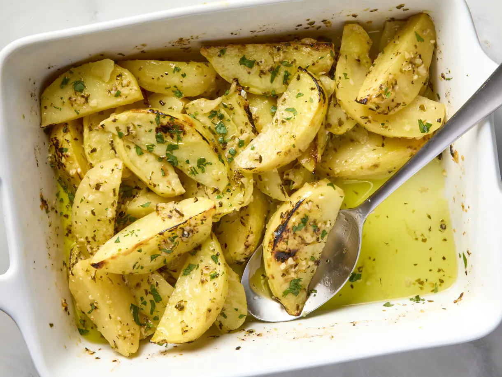

Lemon Potatoes

Greek lemon potatoes. I’ve been making them every week for the past couple of months and everyone raves about them. These potato wedges have the best balance of browned, crispy edges and centers that are so creamy they basically melt in your mouth. And maybe even better than that, the flavors of lemon, garlic, oregano, and olive oil seep into the perfectly seasoned potatoes as they cook.
3cloves garlic2lemons½ cupchicken or vegetable broth½ cupolive oil2 tspdried oregano1¼ tspkosher salt¼ tspfreshly ground black pepper2 lbYukon gold potatoes
Arrange a rack in the middle of the oven and heat the oven to 400℉.
Mince 3 garlic cloves and place in a 9x13-inch baking dish. Juice 2 lemons until you have ⅓ cup and add to the baking dish. Add the broth, olive oil, oregano, salt, and black pepper. Stir to combine.
Peel 2 pounds Yukon gold potatoes and cut into 1-inch-wide wedges. Add to the baking dish and toss to coat. Spread into an even layer. Cover the baking dish with aluminum foil.
Roast for 30 minutes. Uncover and toss the potatoes. Return the baking dish to the oven and roast uncovered until the potatoes are very tender, 35 minutes more. If you’d like browned edges, turn the oven to broil and broil until the potatoes are lightly browned, 2 to 4 minutes.